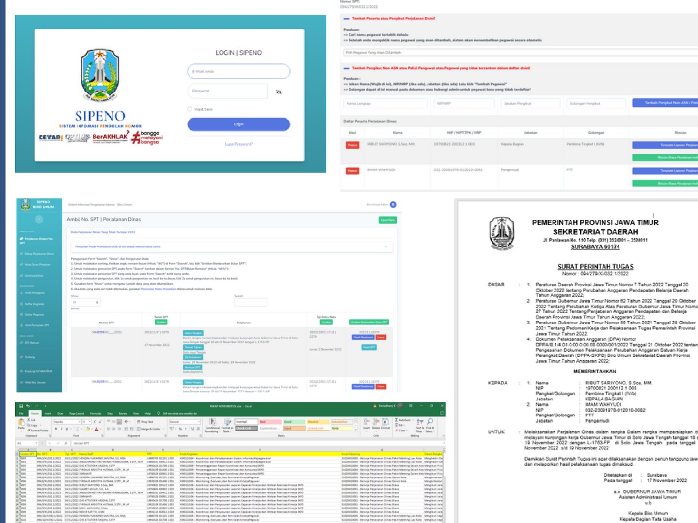

01 · Laravel 8
SIPENO Sistem Perjalanan Dinas
Surat tugas dan rincian biaya, rapi dalam satu meja.
Sistem web untuk Biro Umum Sekretariat Daerah Provinsi Jawa Timur. Mengurus pembuatan dan rekapitulasi bulanan dokumen pertanggungjawaban perjalanan dinas: surat tugas, nota dinas, surat perintah perjalanan dinas, dan rincian biaya tiap perjalanan.
Resto 01